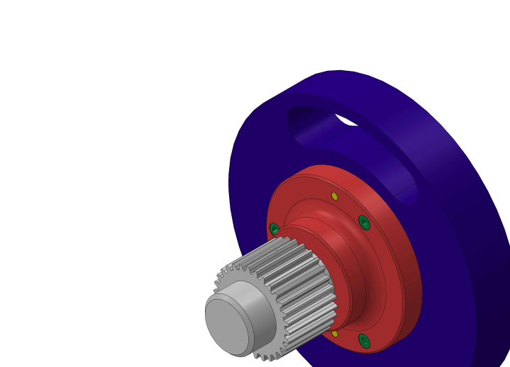
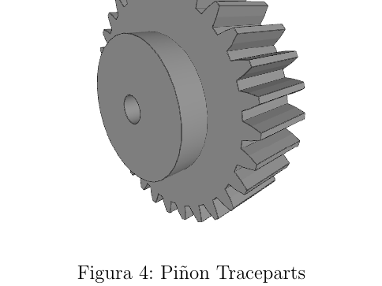
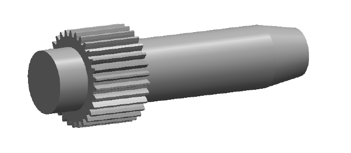
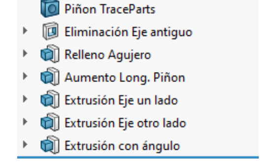
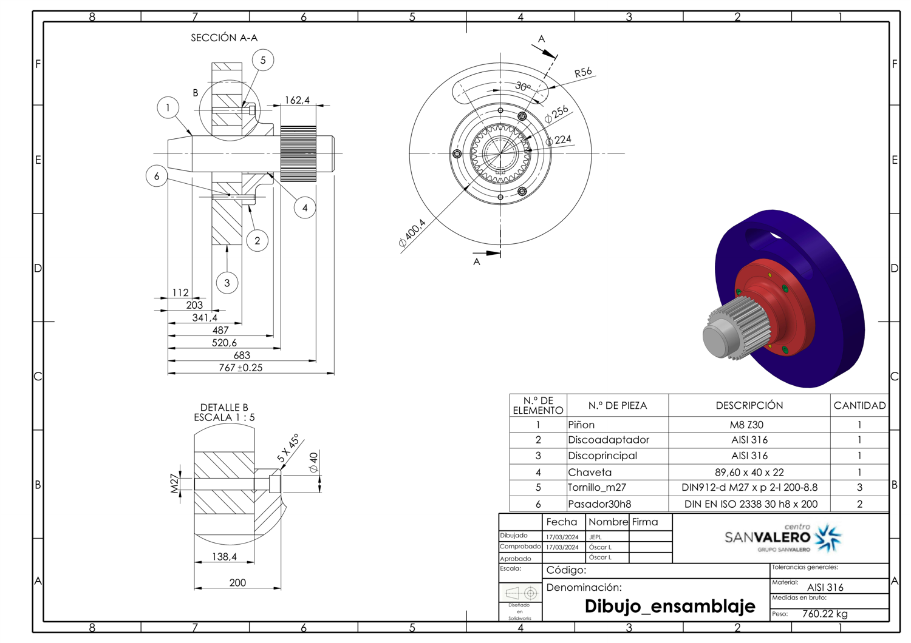
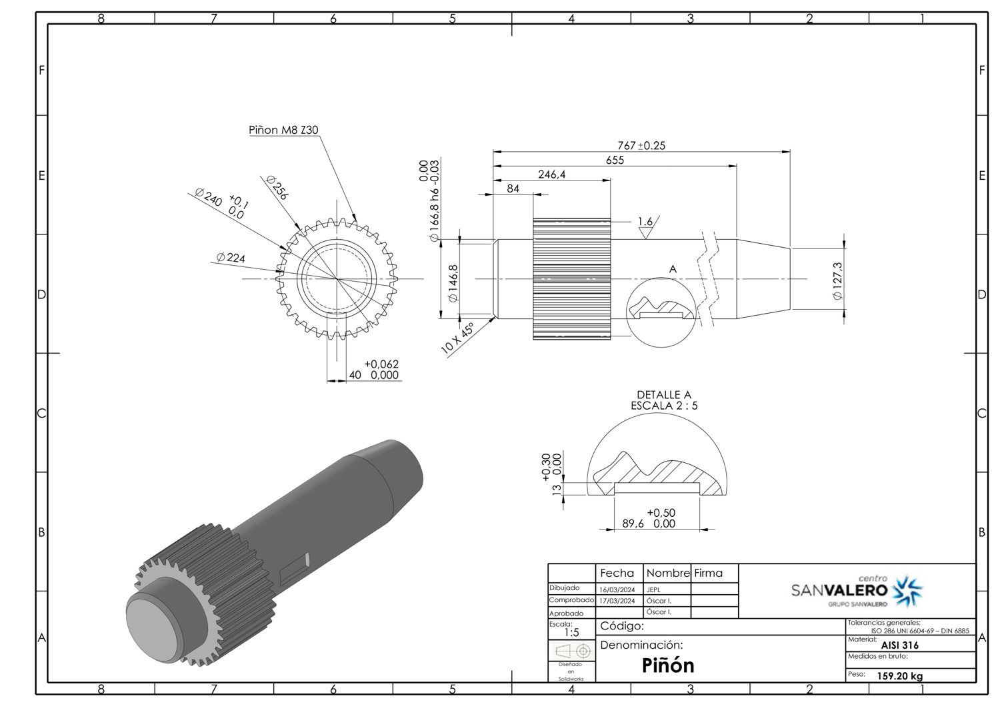
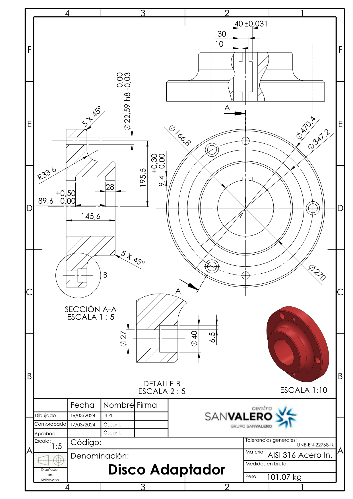
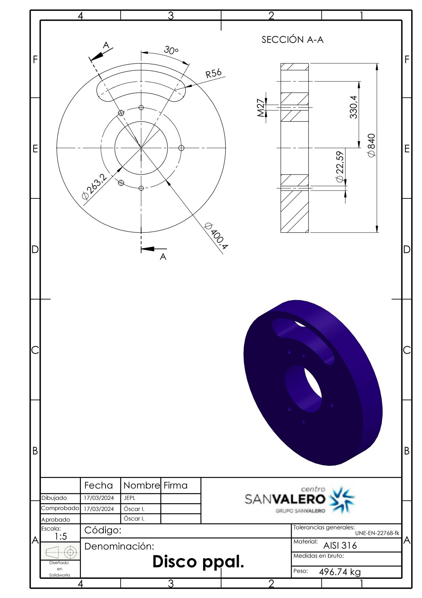

End-to-end design of a real mechanical product in SolidWorks: a pinion-shaft transmission with an adapter disc, main disc and key. From catalogue selection and proportional scaling, through part modelling and material choice, to full GD&T manufacturing drawings and a working assembly.

Design a manufacturable mechanical power-transmission product around a selected spur pinion. The pinion is chosen from a catalogue, scaled to a target size, modelled with a real shaft and keyway, joined to an adapter disc and a main disc, and fully documented with manufacturing drawings and an assembly — exactly the workflow of a junior mechanical/manufacturing engineer.
A1-399-30-1 from the TraceParts catalogue (rated torque 1834 N·m).


| Item | Value |
|---|---|
| Pinion module / teeth | m = 8 mm · Z = 30 |
| Outer diameter (scaled) | Ø256 mm |
| Proportional scale factor | ×5.6 |
| Shaft fit (example) | Ø166.8 h6 (−0.03 / 0) |
| Keyway / key | 89.6 × 40 × 22 mm (DIN 6885) |
| Fasteners | 3 × DIN 912 M27 · 2 × ISO 2338 Ø30 h8 |
| Material | AISI 316 (Rm 590 MPa) |
| Assembly mass | ≈ 760 kg |
Real production drawings: dimensioned and toleranced (ISO 286 / DIN), with section and detail views, a Bill of Materials, and a normalized title block. Click any sheet to enlarge.




This is a complete, manufacturable mechanical product taken from a brief to production-ready documentation. It demonstrates the full design loop — catalogue selection, scaling, parametric modelling, standards-based tolerancing, material selection and technical drawing — and the engineering judgement at each step (why this pinion, why this key, why this fit), not just CAD button-pushing.